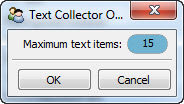

Defines a tool for organizing, filtering, displaying and selecting a collection of input text strings.
Any input string received by the tool is added to the end of the current collection. The collection is displayed as a table with each line containing:
Selecting any item in the table sends the item’s text to the output_text facet of the tool, making it available to any connected tool.
You can click on the text field table header to display a filter dialog. Only text items containing any text entered there are displayed in the table. The match can either be case sensitive or case insensitive.
The contents of the text collection are remembered across sessions. You can control the maximum number of text items allowed in the collection using the tool’s option dialog, available through the tool’s feature toolbar.
facets.extra.tools.text_collector
In addition to its input and output connections, the text collector tool also supports setting the following facets through the tool’s options dialog, available on the tool’s feature toolbar:
This view shows the text collector tool after it has been used to collect a number of text strings.
The text collector tool’s options dialog.